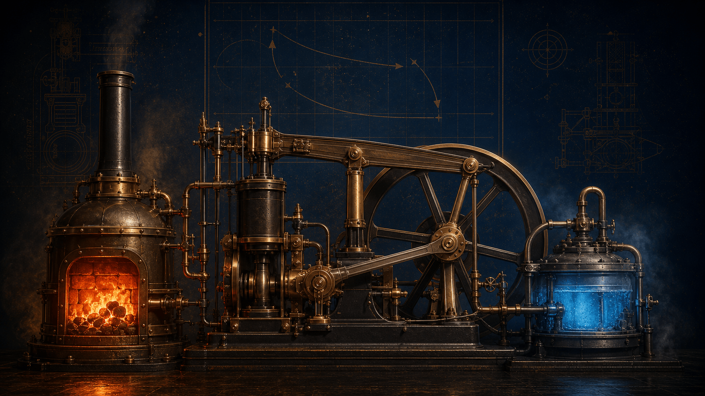
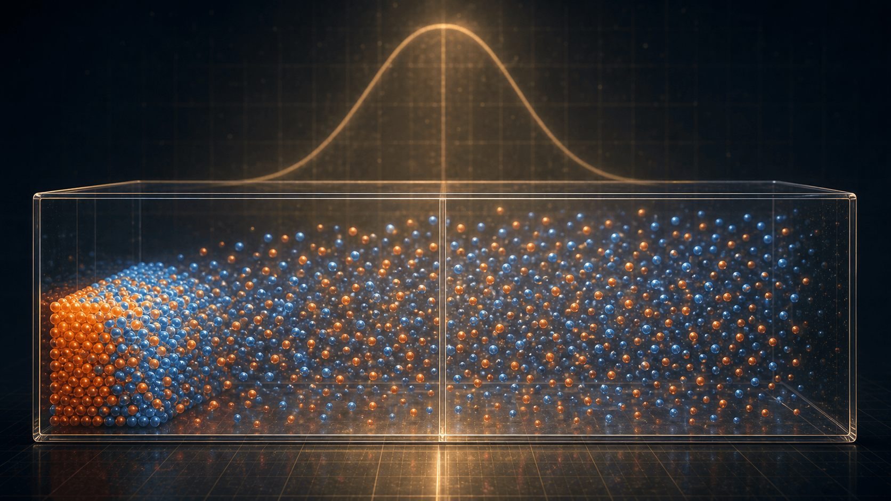
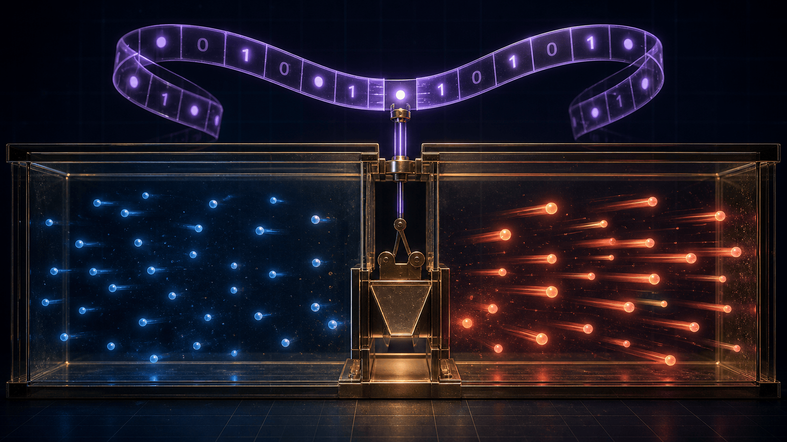
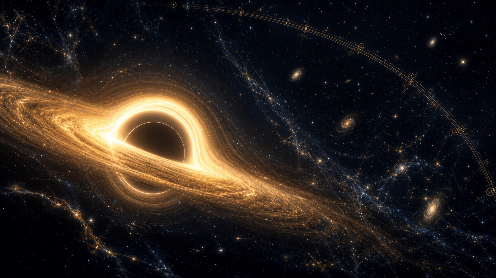

Le fil conducteur
Un mot que presque tout le monde utilise de travers : l'entropie. On la dit « désordre », « chaos ». Il y a un peu de vrai, beaucoup de raccourcis, et parfois autre chose que de la physique.
Ce dossier reprend, mot pour mot, le grand live de Provoxys — qui porte le récit — et de Samlepirate, qui manipule en direct les expériences. Les 26 laboratoires interactifs décrits par Sam sont ici réellement jouables : touchez les curseurs, lisez les bilans, refaites les mesures.
- OuvertureLe café qui refroidit et le film qui ne passe que dans un sens.
- Actes I–II · MachinesCarnot, Joule, Clausius : naissance du second principe et du bilan d'entropie.
- Acte III · Micro-étatsBoltzmann et Gibbs : compter les mondes possibles.
- Acte IV · Matière & vivantProduction d'entropie, phases, exergie, organismes, Ising.
- Acte V · InformationShannon, démon de Maxwell, Landauer, entropie quantique.
- Actes VI–VII · Temps & cosmosFlèche du temps, trous noirs, mort thermique de l'Univers.
Ce que ce dossier vous apprend
Sortir du mot « désordre »
Une entropie dépend des états qu'on distingue, de leurs probabilités et de la frontière du système. Jamais un simple détecteur de bazar.
Trois entropies à ne pas confondre
Système, milieu, ensemble total : une partie peut perdre de l'entropie pendant que le total augmente. C'est là que se cachent les faux paradoxes.
Une même idée, du café aux trous noirs
Clausius, Boltzmann, Gibbs, Shannon, von Neumann, Bekenstein-Hawking : une famille de concepts reliés sans être identiques.


Ouverture
Le film qui ne passe que dans un sens
Provoxys — Accueil
« Bonsoir à toutes et à tous. Ce soir, on va parler d'un mot que tout le monde a déjà entendu et que presque tout le monde utilise de travers : l'entropie.
On dit que c'est le désordre. On dit que c'est le chaos. On dit parfois que c'est la raison pour laquelle une chambre finit toujours en bazar, que les civilisations s'effondrent ou que l'Univers va mourir.
Il y a un peu de vrai, beaucoup de raccourcis, et parfois franchement autre chose que de la physique.
Alors on va repartir d'une question beaucoup plus simple. Pourquoi un café chaud posé sur une table refroidit-il ? Et surtout : pourquoi ne voit-on jamais le phénomène inverse ? Pourquoi le café ne récupère-t-il pas spontanément toute la chaleur dispersée dans la pièce pour redevenir brûlant ?
L'énergie, pourtant, n'a pas disparu. Elle est toujours là. Elle s'est simplement répartie autrement.
Ce soir, notre question sera donc celle-ci : qu'est-ce qui distingue une transformation possible dans les deux sens d'une transformation qui, à notre échelle, ne se produit que dans un sens ?
Et pour le montrer, je ne suis pas seul. Sam va manipuler en direct plusieurs expériences et simulations. Pas pour décorer ce que je raconte : pour tester les idées avec nous. »
Sam — Le mini-test de la flèche du temps
« Salut tout le monde. On commence par un test très simple. Je vais vous montrer quatre petits films, et vous essayez de repérer ceux qui passent à l'envers.
Premier film : une planète tourne autour d'une étoile. Deuxième : deux billes idéales se percutent. Troisième : une goutte d'encre se diffuse dans l'eau. Quatrième : un glaçon fond.
Pour les deux premiers, si je retourne le film, rien ne saute immédiatement aux yeux. Les équations acceptent très bien les deux sens. Pour l'encre et le glaçon, en revanche, notre intuition proteste tout de suite.
Le paradoxe du live est déjà là : les constituants microscopiques obéissent souvent à des lois presque réversibles, mais le monde macroscopique possède une direction. L'entropie sert précisément à quantifier cette direction. »
« Provoxys, à toi : avant de comprendre cette direction, il faut revenir aux machines qui ont obligé les physiciens à la découvrir. »
Transformer la chaleur en travail
Machines à vapeur, cycle de Carnot et premier principe. La thermodynamique naît d'un problème industriel avant de devenir cosmique.

Acte I · Chapitre 1
La machine avant la théorie
Provoxys
« À la fin du XVIIIe siècle et au début du XIXe, la question n'est pas encore cosmique. Elle est industrielle.
Les machines à vapeur de Newcomen puis de Watt permettent de pomper de l'eau, d'actionner des ateliers et bientôt de transformer les transports. Mais elles consomment énormément de combustible pour une quantité limitée de travail mécanique.
Les ingénieurs savent construire. Ils ne savent pas encore répondre à trois questions fondamentales : de quoi dépend le rendement ? Peut-on toujours l'améliorer ? Existe-t-il une limite que même une machine parfaite ne pourrait pas dépasser ?
C'est dans ce contexte que Sadi Carnot publie, en 1824, ses Réflexions sur la puissance motrice du feu.
Carnot comprend qu'un moteur thermique ne fonctionne pas seulement avec de la chaleur. Il fonctionne avec une différence de température. Il reçoit de l'énergie d'une source chaude, en transforme une partie en travail et doit rejeter le reste vers une source froide.
On peut améliorer la mécanique, réduire les frottements, mieux isoler. Mais même une machine idéale ne transforme pas toute la chaleur reçue en travail. »
Sam — Machine thermique et double bilan
« Voilà la machine la plus simple possible. À gauche, une source chaude à 600 kelvins. À droite, une source froide à 300 kelvins. Au milieu, le moteur.
Je lui donne 1000 joules de chaleur. Dans la limite de Carnot, il peut en convertir 500 en travail. Les 500 autres doivent partir vers la source froide. Le rendement maximal est donc de 50 %.
Maintenant, regardez les deux bilans. En haut, l'énergie : 1000 joules entrent, 500 deviennent du travail, 500 sont rejetés. Rien ne manque.
En bas, l'entropie : la source chaude perd environ 1,67 joule par kelvin. La source froide gagne exactement la même quantité. Dans cette limite idéale, l'entropie est transportée sans être produite.
Si j'ajoute des frottements ou un échange de chaleur trop brutal, l'énergie se conserve encore. En revanche, de l'entropie est créée, le travail utile diminue et davantage de chaleur finit dans la source froide. »
« C'est le premier message important : le premier principe tient les comptes de l'énergie. Le second principe dit quelle part de cette énergie reste réellement utilisable. »
« Provoxys, je te rends la parole pour le cycle lui-même. »
Acte I · Chapitre 2
Le cycle de Carnot
Provoxys
« Une machine thermique fonctionne en cycle : après plusieurs étapes, son fluide de travail revient à son état initial.
Dans le cycle idéal de Carnot, il y a quatre transformations : une détente isotherme au contact de la source chaude, une détente adiabatique, une compression isotherme au contact de la source froide et une compression adiabatique.
Le rendement maximal vaut un moins la température froide divisée par la température chaude. Les températures doivent être exprimées en kelvins.
Le rendement maximal d'un moteur cyclique entre deux sources ne dépend que du rapport des températures absolues (en kelvins), pas d'un simple écart de degrés. Avec et : , soit 50 %. Aucune machine réelle entre ces deux sources ne peut faire mieux.
Ce point est essentiel : le rendement ne dépend pas simplement d'un nombre de degrés d'écart. Il dépend du rapport entre les températures absolues.
Carnot travaille encore avec la théorie calorique de son époque. La formulation énergétique moderne viendra ensuite avec Mayer, Joule, Helmholtz, Clausius et Kelvin. Mais son raisonnement établit déjà qu'une limite de rendement est inscrite dans la structure même des échanges thermiques. »
Sam — Piston et diagrammes synchronisés
« Je vais faire un tour de cycle très lentement.
Étape un : le gaz reçoit de la chaleur à température constante et pousse le piston. Sur le diagramme pression-volume, le volume augmente. Sur le diagramme température-entropie, on avance horizontalement à la température chaude.
Étape deux : on isole thermiquement le gaz. Il continue de se détendre, fournit du travail et refroidit. C'est une détente adiabatique réversible : son entropie reste constante.
Étape trois : à la température froide, on comprime le gaz et il rejette de la chaleur.
Étape quatre : compression adiabatique. On revient à l'état initial.
Attention à un raccourci fréquent : l'aire sous une courbe T–S représente une chaleur échangée seulement lorsque les conditions du modèle le permettent, notamment pour un trajet réversible ou intérieurement réversible. Et une boucle sur ce diagramme ne signifie pas automatiquement “entropie créée”.
Ici, la boucle est idéale. Si j'active les irréversibilités, il faut ajouter un bilan de production d'entropie ; on ne peut plus lire toute la physique uniquement comme une belle aire géométrique. »
« Provoxys, à toi pour la question que Carnot ne pouvait pas encore résoudre : qu'est-ce que la chaleur ? »
Acte I · Chapitre 3
Joule et la conservation de l'énergie
Provoxys
« Au milieu du XIXe siècle, Mayer, Joule et Helmholtz établissent progressivement que chaleur et travail sont deux modes de transfert d'une même grandeur conservée : l'énergie.
Joule utilise notamment des masses qui tombent et entraînent des palettes dans de l'eau. Le mouvement désordonné du fluide finit par augmenter sa température. Le travail mécanique est devenu énergie interne.
Le premier principe peut alors s'écrire, avec notre convention : la variation d'énergie interne est égale à la chaleur reçue plus le travail reçu par le système.
ΔU est la variation d'énergie interne du système ; Q la chaleur reçue et W le travail reçu (convention « reçu par le système > 0 », tenue tout au long du dossier). L'énergie ne se crée ni ne se détruit : elle change seulement de forme. Mais ce principe, à lui seul, n'interdit pas qu'un café froid se réchauffe en pompant la chaleur de la pièce : il manque le sens.
Mais une difficulté demeure. Le premier principe interdit la disparition de l'énergie ; il n'interdit pas qu'un café froid prélève spontanément de la chaleur à la pièce pour redevenir chaud. Pour expliquer pourquoi cela ne se produit pas, il faut une autre loi. »
Sam — L'expérience de Joule
« Avant de quitter le premier principe, on va refaire l'idée de Joule.
Deux masses descendent. Leur énergie potentielle fait tourner ces palettes dans l'eau. Je connais la masse, la hauteur et la gravité ; je peux donc calculer le travail mécanique fourni. Le brassage transforme ce mouvement organisé en agitation microscopique et la température de l'eau augmente.
Dans le mode idéal, le travail perdu par les masses correspond à l'augmentation d'énergie interne du calorimètre. Si je double la masse ou la hauteur, je double l'énergie fournie. Si je double la capacité thermique de l'eau, la même énergie produit une élévation de température deux fois plus petite.
J'active maintenant les pertes. Une partie de l'énergie chauffe l'axe, les roulements et l'air. Le bilan énergétique reste fermé si je prends un système assez large, mais la mesure de l'eau seule ne récupère plus tout.
Cette expérience illustre deux idées différentes : l'énergie mécanique et la chaleur sont convertibles ; la transformation spontanée du mouvement organisé en agitation est, elle, irréversible. On peut chauffer l'eau avec les palettes. On ne voit pas l'eau se refroidir spontanément pour faire remonter les masses. »
« Question pour le chat : si je double la quantité d'eau sans changer les masses, est-ce que l'énergie transférée change, ou seulement l'élévation de température ? »
« Provoxys, maintenant nous avons la conservation. Il nous manque encore le sens. »
Clausius et le sens des transformations
Deux énoncés d'une même limite, une nouvelle fonction d'état — l'entropie — et le bilan qui distingue l'entropie échangée de l'entropie créée.
Acte II · Chapitre 4
Deux formulations d'une même limite
Provoxys
« Rudolf Clausius et William Thomson, futur Lord Kelvin, réconcilient la théorie des machines et la conservation de l'énergie.
L'énoncé de Clausius dit qu'un transfert de chaleur du froid vers le chaud ne peut pas être le seul résultat d'une transformation. Un réfrigérateur peut bien déplacer de la chaleur du froid vers le chaud, mais il consomme du travail.
L'énoncé de Kelvin-Planck dit qu'une machine cyclique ne peut pas avoir pour seul résultat de prélever de la chaleur à une source et de la transformer intégralement en travail.
Ces deux formulations sont équivalentes. Si l'on pouvait violer l'une, on pourrait construire un dispositif violant l'autre.
Clausius introduit alors une nouvelle fonction d'état : l'entropie, notée S. Pour une transformation réversible, sa variation est liée à la chaleur échangée réversiblement divisée par la température absolue.
Mais la formulation la plus utile pour comprendre les phénomènes réels est un bilan. La variation d'entropie d'un système est égale à l'entropie échangée avec l'extérieur plus l'entropie créée à l'intérieur.
Pour une transformation réversible, la variation d'entropie vaut la chaleur échangée divisée par la température absolue T. En général, la variation d'entropie d'un système se décompose en une part échangée avec l'extérieur et une part créée à l'intérieur, toujours positive ou nulle — nulle seulement dans la limite réversible. L'entropie se mesure en joules par kelvin (J/K) : ce n'est pas une énergie.
Cette entropie créée est toujours positive ou nulle. Nulle dans la limite réversible, positive dans un processus réel.
Et voici une nuance capitale : l'entropie d'un système peut diminuer. Celle d'un réfrigérateur froid, d'un cristal qui se forme ou d'un organisme qui construit une structure peut localement diminuer. Ce que le second principe interdit, c'est une diminution de l'entropie totale d'un ensemble isolé. »
Sam — Mélange calorimétrique
« Voilà deux masses d'eau identiques. Une chaude, une froide. Je les mets en contact dans une enceinte isolée.
Le premier principe nous donne la température finale : environ 50 degrés Celsius si l'on néglige le calorimètre et les pertes.
Maintenant le bilan d'entropie. L'eau chaude perd de l'entropie. L'eau froide en gagne. Mais comme la chaleur reçue par la partie froide arrive à une température plus basse que celle à laquelle elle a quitté la partie chaude, le gain est plus grand que la perte.
La somme est positive.
Je relance au ralenti. Regardez bien : l'énergie thermique totale est conservée dans l'enceinte, tandis que l'écart de température s'efface et que l'entropie totale augmente jusqu'à un plateau.
Si je demande maintenant au système de revenir tout seul à 80 degrés d'un côté et 20 de l'autre, je ne viole pas la conservation de l'énergie. Je viole la statistique écrasante du second principe. »
« Et je profite de ce graphe pour corriger une confusion. L'entropie ne mesure pas la quantité totale d'énergie. Elle possède une unité différente : le joule par kelvin. Elle renseigne sur la manière dont l'énergie est répartie et sur les transformations encore accessibles. »
« Provoxys, à toi pour passer de ce bilan macroscopique aux molécules. »
Acte II · Chapitre 5
Système isolé, fermé et adiabatique
Provoxys
« Avant de descendre au niveau microscopique, fixons trois mots.
Un système fermé n'échange pas de matière, mais peut échanger de l'énergie.
Un système adiabatique n'échange pas de chaleur, mais il peut encore fournir ou recevoir du travail.
Un système isolé n'échange ni matière ni énergie avec l'extérieur.
C'est seulement pour ce dernier que l'on peut affirmer directement : son entropie totale ne diminue pas.
Cette précision paraît scolaire. Elle évite pourtant énormément de faux paradoxes, notamment lorsqu'on parle du vivant, d'un réfrigérateur ou même de l'Univers. »
Sam — Le laboratoire des frontières
« On va construire les mots à l'écran.
Je laisse passer la chaleur et le travail, mais pas la matière : système fermé. Je bloque la chaleur mais je laisse le piston bouger : système adiabatique, pas isolé. Je bloque les trois échanges : système isolé.
Prenons maintenant un thermos réel. Il limite les échanges thermiques, mais il n'est jamais parfaitement isolé. Un réfrigérateur échange du travail électrique et rejette de la chaleur. Un organisme échange matière, énergie et entropie : c'est un système ouvert.
Je place enfin la frontière autour du réfrigérateur seul, puis autour du réfrigérateur et de la pièce. Le bilan change de forme selon la frontière, même si le phénomène physique est le même.
Question au chat : une bouteille fermée que l'on secoue est-elle isolée ? Réponse : elle est fermée à la matière, mais votre main lui fournit du travail. »
« La frontière n'est donc pas un détail graphique. Elle détermine ce que nous appelons le système et les flux qui traversent notre comptabilité. »
« Provoxys, il reste un dernier principe classique avant les molécules. »
Acte II · Chapitre 6
Troisième principe et zéro absolu
Provoxys
« Le troisième principe concerne la limite des très basses températures. Dans sa forme la plus courante, l'entropie d'un cristal parfait tend vers une constante lorsque la température tend vers zéro ; cette constante est prise égale à zéro dans le cas idéal approprié.
Cela permet de définir des entropies absolues et pas seulement des variations d'entropie.
Mais attention à deux simplifications. Premièrement, un matériau réel peut conserver une entropie résiduelle s'il possède plusieurs configurations gelées ou des défauts. Deuxièmement, le zéro absolu n'est pas simplement “plus aucun mouvement”. La mécanique quantique conserve des fluctuations de point zéro.
Enfin, atteindre exactement zéro kelvin demanderait une procédure limite inaccessible en un nombre fini d'opérations. Nous pouvons nous en approcher extraordinairement près, pas l'atteindre. »
◆ Respiration — fin de la première heure
Provoxys — « Avant la pause, trois questions rapides. L'entropie est-elle une énergie ? Non. Un système adiabatique est-il forcément isolé ? Non. L'entropie d'une partie peut-elle diminuer ? Oui, si le bilan global respecte le second principe. »
Sam — « Je laisse à l'écran les trois bilans vus jusqu'ici : machine thermique, mélange d'eau et frontières. On revient dans huit minutes avec les micro-états — là où le mot entropie change complètement d'échelle. »
Boltzmann : compter les mondes possibles
Un même état visible correspond à une multitude de réalités invisibles. L'entropie devient le comptage des micro-états — et l'équilibre, le macro-état écrasant de probabilité.

Acte III · Chapitre 7
Un même état visible, une multitude de réalités invisibles
Provoxys
« La thermodynamique de Clausius fonctionne sans connaître les molécules. Elle décrit pression, volume, température et entropie à notre échelle.
Maxwell, Boltzmann et Gibbs vont poser une autre question : comment ces lois émergent-elles du mouvement d'un nombre gigantesque de particules ?
Un macro-état est une description globale : cinquante particules à gauche, cinquante à droite ; telle pression ; telle température.
Un micro-état précise au contraire la configuration détaillée : quelle particule se trouve où, avec quelle vitesse et quelle énergie.
Un même macro-état peut correspondre à un très grand nombre de micro-états. Boltzmann relie alors l'entropie à cette multiplicité par la formule S égale k de Boltzmann multiplié par le logarithme de oméga.
Ω (oméga) est le nombre de micro-états compatibles avec le macro-état défini — pas « le désordre ». est la constante de Boltzmann (valeur exacte depuis la redéfinition du SI en 2019). Le logarithme est là pour une raison précise : quand on réunit deux systèmes indépendants, leurs multiplicités se multiplient alors que leurs entropies doivent s'additionner.
Oméga n'est pas “le désordre”. C'est le nombre de micro-états compatibles avec le macro-état que nous avons défini. »
Sam — La grille de configurations
« Voici le prototype que nous avons déjà. Cent cases, cinquante pions noirs.
Je commence par les ranger en un bloc parfaitement net. L'écran calcule trois choses.
Première mesure : l'entropie binaire par case. Comme la moitié des cases sont actives, elle vaut un bit par case.
Deuxième mesure : le logarithme du nombre de façons de choisir cinquante cases parmi cent. Ce nombre est immense.
Troisième mesure : l'entropie des petits motifs deux par deux, qui regarde la structure spatiale locale.
Maintenant je clique sur “placement aléatoire”. Visuellement, tout change. Pourtant, l'entropie binaire et la combinatoire restent identiques : il y a toujours cinquante pions parmi cent.
En revanche, la distribution des motifs locaux change.
Et c'est justement la leçon. Si je vous demande seulement “combien de cases sont noires ?”, l'arrangement n'a aucune importance. Si je vous demande “quels motifs locaux apparaissent ?”, il devient essentiel.
Une entropie dépend donc de la description choisie, des états que l'on distingue et des probabilités qu'on leur attribue. Ce n'est pas un détecteur universel de bazar. »
« Provoxys, continue : pourquoi l'équilibre domine-t-il à ce point ? »
Acte III · Chapitre 8
Pourquoi le mélange gagne
Provoxys
« Prenons un gaz dans une boîte séparée en deux. Toutes les particules commencent à gauche. On enlève la cloison.
Rien dans les équations du mouvement n'interdit aux particules de revenir toutes à gauche. Mais presque toutes les configurations accessibles correspondent à une répartition proche de la moitié à gauche et de la moitié à droite.
Pour dix particules, une fluctuation spectaculaire reste imaginable. Pour un nombre de particules comparable à celui d'un verre d'air, la disproportion entre les multiplicités devient vertigineuse.
L'irréversibilité macroscopique n'est donc pas nécessairement une interdiction microscopique absolue. C'est une asymétrie de probabilités si écrasante que l'évolution inverse n'est jamais observée à notre échelle. »
Sam — Deux compartiments
« Avec vingt particules, je peux compter les macro-états. Il n'existe qu'une configuration où elles sont toutes à gauche, si je ne distingue que le côté occupé par chaque particule. Mais il existe énormément de configurations proches de dix à gauche et dix à droite.
La courbe centrale montre la multiplicité. Elle culmine autour du partage équilibré.
Je passe maintenant de vingt à mille particules. La courbe se resserre relativement autour de son maximum. Les écarts importants deviennent rarissimes.
Et dans un gaz réel, nous ne parlons pas de mille particules, mais d'un nombre de l'ordre de dix puissance vingt-trois. À cette échelle, attendre que toutes retournent spontanément dans un coin n'est pas une stratégie expérimentale. »
« Voilà comment une loi statistique devient, dans la pratique, une loi implacable. »
« À toi Provoxys pour la formule et pour Gibbs. »
Acte III · Chapitre 9
Boltzmann, Gibbs et le logarithme
Provoxys
« La formule de Boltzmann s'écrit donc : S égale k indice B fois le logarithme de la multiplicité.
Pourquoi un logarithme ? Parce que lorsque deux systèmes indépendants sont réunis, leurs nombres de configurations se multiplient, tandis que leurs entropies doivent s'additionner. Le logarithme transforme précisément un produit en somme.
La formule simple suppose que les micro-états compatibles sont équiprobables. Gibbs fournit une expression plus générale : moins k de Boltzmann fois la somme des probabilités p indice i multipliées par leur logarithme.
Quand les micro-états ne sont pas équiprobables, l'entropie fait intervenir chaque probabilité . Si tous les états sont équiprobables (), on retombe exactement sur Boltzmann . Une distribution concentrée a une entropie faible ; une distribution uniforme sur de nombreux états, l'entropie la plus élevée.
Une distribution très concentrée possède une entropie faible. Une distribution uniforme sur de nombreux états possède une entropie plus élevée.
Cette formulation permet de traiter des systèmes en contact avec un environnement thermique et prépare aussi le rapprochement mathématique avec l'entropie de Shannon. Mais ressemblance mathématique ne signifie pas identité automatique de sens physique. »
Sam — Façonner une distribution
« J'ai quatre états possibles. Pour commencer, le premier possède une probabilité égale à un et les autres zéro. Il n'y a aucune incertitude : l'entropie vaut zéro.
Je répartis maintenant la probabilité entre deux états. Puis trois. Enfin quatre états équiprobables. L'entropie augmente jusqu'à son maximum.
Ce graphe corrige aussi une autre intuition. Une distribution peut paraître “irrégulière” à l'œil tout en ayant une entropie plus élevée qu'une distribution visuellement lisse mais très concentrée. Ce qui compte, ce sont les probabilités numériques.
Je change enfin le niveau de description : je fusionne les états trois et quatre en une seule catégorie. L'entropie calculée change parce que la question posée a changé. La physique sous-jacente n'a pas nécessairement changé ; notre description, oui. »
« C'est cette discipline — définir les états avant de calculer — qui évite de transformer l'entropie en métaphore vague. »
« Provoxys, passons à un système où nous pouvons compter exactement les façons de distribuer l'énergie. »
Acte III · Chapitre 10
Deux solides échangent de l'énergie
Sam — Les solides d'Einstein
« Ici, chaque solide est un ensemble d'oscillateurs. Les petits points représentent des quanta d'énergie. L'énergie totale est fixée, mais les deux solides peuvent se l'échanger.
Pour chaque partage possible, l'application compte la multiplicité du solide A, celle du solide B, puis les multiplie pour obtenir la multiplicité totale.
Je déplace ce curseur. Quand presque toute l'énergie est dans A, il existe relativement peu de configurations compatibles. Quand l'énergie est répartie près de l'équilibre, la multiplicité totale atteint son maximum.
En dessous, nous affichons les entropies. Le maximum du produit des multiplicités correspond au maximum de la somme des entropies.
Et si je laisse les quanta s'échanger au hasard, le système passe l'immense majorité de son temps près de cette zone. Il peut s'en éloigner brièvement : ce sont des fluctuations. Mais plus les solides sont grands, plus ces fluctuations relatives deviennent petites. »
« Donc le second principe n'est pas une petite police qui interdit chaque mouvement microscopique. C'est le poids colossal du nombre de possibilités. »
« Provoxys, on vient de voir l'équilibre. Mais il reste à montrer qu'un petit système peut s'en éloigner. »
Acte III · Chapitre 11
Fluctuations et taille du système
Provoxys
« Le second principe est une loi macroscopique d'une fiabilité extraordinaire. Il ne signifie pourtant pas que chaque petite portion de matière voit son entropie monter sans aucune oscillation.
Dans un système comportant peu de particules, des fluctuations temporaires sont normales. Une majorité peut se retrouver brièvement d'un côté. Une petite quantité de chaleur peut circuler momentanément dans le sens opposé au flux moyen.
Plus le système grandit, plus les fluctuations absolues peuvent croître, mais plus elles deviennent petites relativement à la taille totale. C'est pourquoi la thermodynamique semble lisse et déterministe à notre échelle. »
Sam — Marche aléatoire et fluctuations
« Les trois systèmes suivent exactement la même règle aléatoire. La ligne centrale représente un partage moitié-moitié.
Avec dix particules, la fraction à gauche bondit partout. Il arrive même qu'une forte majorité se retrouve du même côté.
Avec cent particules, la courbe reste plus proche de la moitié. Avec dix mille, elle paraît presque immobile à cette échelle.
Je zoome verticalement : les fluctuations existent encore, mais leur taille relative a diminué.
Maintenant je surligne les instants où notre entropie macroscopique baisse pendant quelques pas. Il y en a. Le second principe statistique n'interdit pas chaque petite baisse passagère. Il affirme la tendance et rend les grandes violations macroscopiques immensément improbables.
Question au chat : laquelle de ces trois courbes ressemble le plus à une loi déterministe ? Celle du grand système — alors que les règles microscopiques sont identiques. »
« Provoxys, nous savons maintenant pourquoi l'équilibre domine. Regardons où l'entropie est produite dans des phénomènes réels. »
Matière, machines réelles et vivant
Où l'entropie est-elle produite ? Diffusion, changements de phase, exergie et systèmes ouverts : le vivant ne viole pas le second principe, il exporte son entropie.
Acte IV · Chapitre 12
Où l'entropie est-elle produite ?
Provoxys
« Jusqu'ici, nous avons calculé l'entropie globale d'états initial et final. Dans une machine ou un matériau réel, on veut aussi savoir où l'irréversibilité apparaît.
Un gradient de température entraîne un flux de chaleur. Un gradient de concentration entraîne une diffusion. Un gradient de vitesse, dans un fluide visqueux, dissipe le mouvement organisé. Les frottements transforment eux aussi du travail mécanique en agitation thermique.
La thermodynamique hors équilibre relie ces flux à des forces thermodynamiques. Près de l'équilibre, les relations d'Onsager décrivent des couplages linéaires et des symétries remarquables.
Ces relations sont un prolongement majeur de la thermodynamique. Il est toutefois trompeur de les baptiser simplement “quatrième principe”, comme le fait un des textes préparatoires : cette numérotation n'est pas standard. »
Sam — Carte de production d'entropie
« La couleur montre la température. Les flèches montrent le flux de chaleur. La troisième couche, en violet, montre où notre modèle calcule la production locale d'entropie.
Au début, le gradient est fort et la production est élevée. À mesure que la température s'homogénéise, le gradient, le flux et la production diminuent. À l'équilibre, il n'y a plus de flux net ni de production liée à ce mécanisme.
Je passe en mode diffusion : même architecture, mais avec un gradient de concentration. Puis en mode viscosité : deux couches de fluide glissent à des vitesses différentes et le cisaillement dissipe leur mouvement relatif.
Ce qui augmente l'entropie n'est pas “le mouvement” en général. Une planète peut tourner sans dissipation idéale. Ce sont ici les flux irréversibles associés aux gradients. »
« Provoxys, si les gradients disparaissent, que se passe-t-il lors d'un changement de phase ? »
Acte IV · Chapitre 13
Changements de phase et énergie libre
Provoxys
« Chauffons de la glace à pression constante.
Sa température augmente jusqu'au point de fusion. Pendant la fusion, nous continuons à fournir de l'énergie, mais la température reste approximativement constante : cette énergie modifie l'organisation microscopique et rompt la structure cristalline.
L'entropie augmente pendant le changement de phase. Pour une transition réversible à température constante, la variation d'entropie est reliée à la chaleur latente divisée par la température.
À température constante T, une transition réversible de chaleur latente L augmente l'entropie de — d'où un plateau de température qui n'est pas un plateau d'entropie. En chimie, l'énergie libre de Gibbs combine enthalpie, température et entropie : à T et P constantes, une transformation spontanée fait décroître G jusqu'à l'équilibre. « Spontané » ne veut pas dire « rapide ».
En chimie, l'énergie libre de Gibbs combine enthalpie, température et entropie. À température et pression constantes, une transformation spontanée tend vers une diminution de G jusqu'à l'équilibre.
Cela évite une autre erreur fréquente : “spontané” ne signifie pas “rapide”. Une réaction peut être thermodynamiquement favorable et rester presque bloquée par une barrière d'activation. »
Sam — De la glace à la vapeur
« Sur l'axe horizontal, l'énergie ajoutée. En haut, la température. En dessous, l'entropie.
La glace se réchauffe : température et entropie augmentent. Au plateau de fusion, la température reste fixe tandis que l'entropie continue d'augmenter. Même chose, à une autre échelle, lors de la vaporisation.
J'affiche maintenant la phase et la trajectoire sur le diagramme température-entropie. Les zones de coexistence sont indiquées séparément.
Ce modèle utilise des capacités thermiques et chaleurs latentes simplifiées. Pour un calcul industriel précis, il faudrait des tables thermodynamiques ou une équation d'état de référence. Mais la structure du bilan est correcte : une température constante ne signifie pas une entropie constante. »
« Provoxys, cette énergie est toujours conservée. Pourtant sa valeur pratique change : c'est le moment de parler d'exergie. »
Acte IV · Chapitre 14
Exergie : la qualité de l'énergie
Provoxys
« Un mégajoule n'a pas toujours la même capacité à produire du travail.
Un mégajoule d'électricité peut presque entièrement alimenter un moteur idéal. Un mégajoule de chaleur à peine plus chaude que l'environnement possède une capacité de conversion beaucoup plus faible.
L'exergie mesure le travail maximal que l'on pourrait obtenir lorsqu'un système évolue vers l'équilibre avec un environnement défini.
Lorsqu'une transformation produit de l'entropie, elle détruit de l'exergie. Le théorème de Gouy-Stodola relie cette destruction à la température de l'environnement multipliée par l'entropie créée.
L'exergie détruite par une transformation irréversible vaut la température de l'environnement multipliée par l'entropie créée. Autrement dit : chaque « grain » d'entropie produit est un peu de capacité de travail perdue pour toujours dans cet environnement. L'énergie, elle, reste conservée : c'est sa qualité qui se dégrade.
Voilà pourquoi dire “on perd de l'énergie” est souvent imprécis. L'énergie est conservée ; c'est sa qualité, sa disponibilité pour produire du travail, qui se dégrade. »
Sam — Sankey énergie/exergie
« À gauche, le Sankey d'énergie. Toute l'énergie du combustible se retrouve dans le travail électrique, la chaleur rejetée et les pertes. La largeur totale est conservée.
À droite, le Sankey d'exergie. La branche détruite grandit dans la combustion, les échangeurs, la turbine et le condenseur. Ce n'est pas une énergie disparue ; c'est une possibilité de produire du travail qui ne peut plus être récupérée dans cet environnement.
Je rapproche la température chaude de la température ambiante. Le même apport thermique transporte moins d'exergie. Je réduis les frottements et les écarts de température : l'exergie détruite diminue.
Le bouton “idéal de Carnot” ne représente pas une machine réalisable à puissance finie. Il sert de limite de comparaison. »
« Question au chat : une pièce chauffée à 21 degrés contient-elle de l'énergie thermique ? Oui. Peut-on facilement convertir cette énergie uniforme en travail sans source plus froide ? Non. »
« Provoxys, si l'équilibre efface les gradients, comment le vivant maintient-il des structures ? »
Acte IV · Chapitre 15
Le vivant et les systèmes ouverts
Provoxys
« La vie est parfois présentée comme une exception au second principe. Elle ne l'est pas.
Un organisme n'est pas isolé. Il absorbe matière et énergie, maintient des gradients, effectue du travail chimique et mécanique, puis rejette chaleur et déchets.
Son organisation locale peut croître parce que le processus complet produit davantage d'entropie dans l'environnement.
À l'échelle de la biosphère, la Terre reçoit du Soleil un rayonnement concentré provenant d'une source chaude et renvoie vers l'espace un rayonnement infrarouge associé à une température bien plus basse. Ce flux permet l'existence de structures et de processus dissipatifs complexes.
Il faut néanmoins éviter une autre extrapolation : la thermodynamique ne fournit pas automatiquement une mesure de l'ordre social, de la valeur morale ou de la complexité d'une civilisation. »
Sam — Bilan d'un organisme simplifié
« Si je ne regarde que l'organisme, je vois des molécules complexes assemblées, des gradients maintenus et du travail accompli. On pourrait croire à une diminution mystérieuse d'entropie.
J'élargis la frontière. Entrent des nutriments et une énergie chimique disponible. Sortent du travail, des produits transformés et surtout de la chaleur à plus basse qualité.
Le panneau ne prétend pas calculer l'entropie complète d'un être vivant molécule par molécule. Il montre la structure du bilan d'un système ouvert.
Je coupe maintenant les flux. Le modèle cesse de maintenir ses gradients et évolue vers l'équilibre. L'ordre local n'était pas gratuit : il dépendait d'un fonctionnement hors équilibre. »
« Provoxys, une transition entre ordre et désordre peut aussi être étudiée dans un modèle beaucoup plus abstrait : Ising. »
Acte IV · Chapitre 16
Ordre, température et modèle d'Ising
Provoxys
« Le modèle d'Ising représente des variables binaires, souvent appelées spins, placées sur une grille et couplées à leurs voisines.
À basse température, les interactions favorisent un alignement collectif. À haute température, l'agitation thermique domine. Entre les deux apparaît une transition de phase.
Ce modèle montre pourquoi “ordre visuel” et entropie ne suffisent pas à eux seuls : il faut considérer l'énergie, la température, les contraintes et les probabilités de tous les états.
Il constitue aussi un pont vers le magnétisme, les phénomènes critiques et la simulation Monte-Carlo. »
Sam — Le modèle d'Ising
« Chaque case porte un spin plus ou moins un. À basse température, les grands domaines alignés dominent et la magnétisation est forte.
Je monte vers la région critique. Les domaines apparaissent à toutes les échelles, les fluctuations deviennent immenses et la magnétisation varie fortement.
Plus haut, l'orientation moyenne s'annule et l'énergie augmente. Le graphique montre énergie, magnétisation, capacité thermique et susceptibilité.
Nous ne prétendons pas déduire l'entropie d'une seule image. Pour l'obtenir correctement, il faut connaître la distribution statistique ou intégrer une relation thermodynamique. La mosaïque sert à voir la structure, pas à remplacer le calcul. »
« Voilà un bon avertissement : deux images visuellement semblables peuvent ne pas représenter la même distribution, et donc pas la même situation thermodynamique. »
◆ Respiration — avant la seconde partie
Provoxys — « Nous avons parcouru la matière, les machines et le vivant. Après la pause : information, mémoire, temps et trous noirs. »
Sam — « Pendant huit minutes, V26 reste à l'écran en mode quiz. Essayez d'associer Clausius, Boltzmann, Gibbs et Shannon à leur objet et à leur unité. »
Information, mémoire et démon de Maxwell
Shannon mesure l'incertitude ; Maxwell imagine un démon trieur ; Landauer découvre qu'effacer un bit a un coût. L'information rejoint la thermodynamique quand un objet physique la porte.
Acte V · Chapitre 17
Shannon : mesurer l'incertitude
Provoxys
« En 1948, Claude Shannon cherche à quantifier l'information transmise par une source de symboles.
Si une source produit toujours la même lettre, son prochain message est parfaitement prévisible. Son entropie informationnelle est faible.
Si plusieurs symboles sont équiprobables, le prochain caractère est plus incertain. L'entropie de Shannon est plus grande.
La formule ressemble à celle de Gibbs : moins la somme de p indice i fois logarithme de p indice i. Mais l'unité choisie est souvent le bit, avec un logarithme en base deux.
La même structure mathématique que Gibbs, mais mesurée en bits (logarithme en base 2). Elle quantifie l'incertitude d'une source : nulle pour une source parfaitement prévisible, maximale () pour N symboles équiprobables — soit 2 bits pour quatre symboles équiprobables. Parenté profonde avec l'entropie thermodynamique, mais objet, unité et sens diffèrent : la connexion devient physique seulement quand un système matériel porte, manipule et efface l'information.
Il faut distinguer les objets. L'entropie thermodynamique possède une unité physique, le joule par kelvin. L'entropie de Shannon quantifie l'incertitude d'une distribution de messages. Leur parenté est profonde, mais elles ne deviennent physiquement équivalentes que lorsqu'une information est portée, manipulée et effacée par un système matériel.
Avant d'arriver à la physique de la mémoire, regardons ce que cette entropie signifie pour un message. »
Sam — L'atelier de codage
« Notre source produit quatre symboles équiprobables. Il faut deux bits pour identifier chacun d'eux, et l'entropie vaut deux bits par symbole.
Je rends maintenant la lettre A très fréquente. La source devient plus prévisible et son entropie diminue. Un code bien conçu peut attribuer un mot court à A et des mots plus longs aux symboles rares ; la longueur moyenne se rapproche de la limite imposée par l'entropie.
J'ajoute une redondance volontaire. Le message devient plus long mais peut mieux résister au bruit si cette redondance sert à détecter et corriger les erreurs.
L'entropie de Shannon ne dit pas si le message est vrai, intelligent ou important. Elle mesure une structure probabiliste de la source. Une suite de mensonges parfaitement imprévisibles peut avoir une forte entropie informationnelle. »
« Provoxys, nous avons mesuré l'information abstraite. Faisons maintenant porter cette information par un dispositif physique. »
Provoxys
« Et c'est là qu'intervient une créature imaginaire inventée par Maxwell. »

Acte V · Chapitre 18
Le démon de Maxwell
Provoxys
« Imaginons deux compartiments remplis du même gaz à la même température. Une petite porte les sépare. Un démon observe les molécules qui arrivent.
Lorsqu'une molécule rapide vient de gauche, il ouvre la porte pour la laisser passer à droite. Lorsqu'une molécule lente vient de droite, il la laisse passer à gauche.
Peu à peu, la droite devient plus chaude et la gauche plus froide. Le démon vient de créer une différence de température sans fournir, apparemment, de travail.
Il pourrait alors faire fonctionner un moteur entre les deux compartiments. Le second principe semble violé.
Mais le mot important est “observe”. Pour trier, le démon doit acquérir de l'information, conserver le résultat de ses décisions et, s'il veut continuer indéfiniment, réinitialiser sa mémoire. »
Sam — Le démon de Maxwell complet
« Je lance d'abord la version trompeuse.
Les particules rapides sont en rouge, les lentes en bleu. Le démon ouvre la porte selon le sens et la vitesse. Regardez les températures : le compartiment droit chauffe, le gauche refroidit.
L'entropie calculée pour le gaz diminue. Si je m'arrête là, j'ai l'air d'avoir battu Clausius.
Maintenant j'affiche ce que j'avais caché : la mémoire du démon. Chaque décision laisse une trace, au minimum un état logique qui doit être distingué.
La mémoire se remplit. Pour recommencer, le démon doit la ramener dans un état standard. C'est l'effacement logique irréversible.
Le principe de Landauer fixe un coût minimal : à température T, effacer un bit produit au moins k de Boltzmann fois T fois logarithme de deux sous forme de chaleur dissipée dans l'environnement. En entropie, cela correspond au minimum à k de Boltzmann logarithme de deux par bit effacé.
Effacer un bit logique de façon irréversible dissipe au minimum en chaleur (≈ à 300 K), soit une production d'entropie d'au moins par bit. Ce coût est attaché à l'effacement, pas automatiquement à la mesure : une mesure peut, en principe, être réalisée réversiblement. Confirmé expérimentalement (Bérut et al., 2012).
Je déclenche l'effacement. La courbe violette monte du côté de l'environnement. Le gaz a gagné de l'ordre, mais le bilan gaz plus mémoire plus environnement ne diminue pas.
Nuance importante : ce coût minimal est attaché à l'effacement logique irréversible, pas automatiquement à toute mesure. Une mesure peut, en principe, être réalisée de manière réversible dans un modèle idéal. C'est la fermeture du cycle informationnel qui oblige à payer. »
« Si j'ajoute des erreurs ou une latence, le tri devient moins efficace. Si j'ajoute un coût mécanique à la porte, le bilan se dégrade encore.
Cette simulation n'est pas une dynamique moléculaire exacte d'un laboratoire. C'est un modèle pédagogique qui sépare les comptes. Sa fonction est de montrer où le paradoxe avait caché l'environnement. »
« Provoxys, à toi pour isoler précisément le coût de l'effacement. »
Acte V · Chapitre 19
Landauer : un bit est un objet physique
Provoxys
« Le moteur de Szilard réduit l'expérience de pensée à une seule particule et une information binaire. Il montre comment connaître le côté occupé peut permettre d'extraire du travail au cours d'un cycle.
Rolf Landauer déplace ensuite la question : quelle opération logique impose nécessairement une dissipation minimale ?
Une opération logiquement réversible conserve assez d'information pour reconstruire l'entrée. Un effacement force plusieurs états possibles, zéro ou un, vers un même état final. Cette compression logique est irréversible.
À température T, le coût minimal idéal associé à l'effacement d'un bit vaut k indice B T logarithme de deux en énergie dissipée.
Les ordinateurs réels dissipent beaucoup plus. Cette limite ne décrit pas leur consommation actuelle ; elle établit un plancher conceptuel reliant logique et thermodynamique. »
Sam — Un bit physique
« Les deux puits représentent zéro et un. Au départ, le bit peut être dans l'un ou l'autre.
Pour l'effacer, je déforme le potentiel afin que les deux possibilités finissent dans le puits zéro. Si je réalise l'opération extrêmement lentement et avec un contrôle idéal, la dissipation approche la limite de Landauer.
Si j'accélère, si j'ajoute du bruit ou si je maintiens une barrière excessive, le coût réel augmente.
Je lance maintenant une opération réversible, comme permuter les deux puits. Elle conserve la distinction entre les entrées et n'est pas soumise de la même manière au coût minimal d'effacement.
Le graphe sépare donc limite théorique et dissipation de notre protocole. Il évite de dire qu'un clic, une mesure ou un bit “pèse automatiquement kT ln 2”. »
« Provoxys, information classique et information quantique utilisent encore une nouvelle entropie. »
Acte V · Chapitre 20
Entropie de von Neumann
Provoxys
« En mécanique quantique, un état est décrit par une matrice de densité. L'entropie de von Neumann s'écrit moins k fois la trace de rho logarithme de rho.
(rho) est la matrice de densité de l'état quantique. Un état pur a une entropie de von Neumann nulle ; un mélange statistique en a une positive. La subtilité de l'intrication : un système global peut être pur () alors que chacune de ses parties, prise seule, possède une entropie positive.
Un état pur possède une entropie de von Neumann nulle. Un mélange statistique peut en posséder une positive.
L'intrication ajoute une subtilité saisissante : un système global peut être dans un état pur tandis que chacune de ses parties, considérée seule, possède une entropie positive.
Cette entropie ne se réduit pas à une ignorance classique sur une bille déjà cachée quelque part. Elle encode la structure quantique de l'état et devient centrale dans l'étude de l'information quantique et des trous noirs. »
Sam — Paire quantique simplifiée
« À gauche, j'ai un mélange classique : nous ignorons lequel de plusieurs états a été préparé. À droite, une paire intriquée.
Les statistiques locales peuvent se ressembler. Mais les descriptions globales et les corrélations ne sont pas les mêmes.
Pour la paire intriquée idéale, l'état global est pur : son entropie de von Neumann est nulle. Si je ne regarde qu'une particule et que je trace sur l'autre, l'état réduit est mixte et son entropie est positive.
Cette interface ne simule pas un laboratoire quantique complet et ne remplace pas les tests de Bell. Elle visualise les matrices, leurs valeurs propres et les entropies globale et réduites. »
« Provoxys, nous avons maintenant tous les outils nécessaires pour revenir à la flèche du temps. »
Flèche du temps et niveau de description
Si les lois microscopiques sont réversibles, où l'irréversibilité entre-t-elle ? Dans le coarse-graining — et dans des conditions initiales très particulières.
Acte VI · Chapitre 21
L'entropie est-elle le temps ?
Provoxys
« L'entropie n'est pas une horloge et elle n'est pas le temps lui-même.
Elle fournit cependant une flèche : elle distingue statistiquement une direction dans laquelle les macro-états deviennent plus probables.
Nous nous souvenons du passé, pas du futur. Les traces, les photographies, les fossiles et les mémoires physiques sont formés dans des processus irréversibles. Cela suggère des liens profonds entre flèche thermodynamique, causalité et mémoire, mais il faut éviter d'en faire une identité simpliste.
Une difficulté demeure : si les équations microscopiques permettent souvent d'inverser les vitesses, où l'irréversibilité entre-t-elle ?
Une partie de la réponse se trouve dans le coarse-graining, c'est-à-dire dans le regroupement d'un immense nombre de détails microscopiques en quelques variables macroscopiques. Nous cessons de suivre chaque molécule et conservons seulement densité, pression ou température.
Cela ne signifie pas que l'entropie serait une simple illusion subjective. Les macrovariables décrivent des contraintes physiques reproductibles, et les états d'équilibre dominent objectivement la multiplicité. Mais le niveau de description doit être déclaré. »
Sam — Deux descriptions du même système
« Je lance des particules dans une boîte avec une dynamique idéale. À gauche, le modèle conserve position et vitesse de chaque particule. À droite, nous ne gardons que le nombre de particules par grande cellule.
Les particules se dispersent. L'entropie coarse-grained de droite augmente parce que la distribution devient uniforme.
À cet instant, j'inverse exactement toutes les vitesses à gauche. Dans le calcul idéal, les particules retracent leurs pas et reforment l'état initial. C'est extrêmement fragile.
J'ajoute une perturbation minuscule ou j'arrondis légèrement les données. La reconstruction échoue rapidement. Les détails nécessaires à l'inversion étaient extraordinairement précis.
À droite, ces détails avaient déjà été regroupés et perdus par notre description macroscopique. La visualisation ne prétend pas résoudre à elle seule le paradoxe de Loschmidt ; elle montre ce que signifie comparer une dynamique fine réversible à une description macroscopique irréversible. »
« Question au chat : une vidéo inversée suffit-elle à inverser toutes les vitesses moléculaires et toutes les corrélations avec l'environnement ? Évidemment non. »
« Provoxys, quelles autres flèches associons-nous au temps ? »
Acte VI · Chapitre 22
Les flèches du temps
Provoxys
« On distingue plusieurs flèches.
La flèche thermodynamique accompagne l'augmentation de l'entropie macroscopique.
La flèche radiative distingue les ondes qui s'éloignent d'une source des solutions convergentes mathématiquement possibles mais rarement observées.
La flèche cosmologique est liée à l'expansion de l'Univers, sans qu'expansion et augmentation d'entropie soient simplement synonymes.
La flèche causale distingue ce que nous appelons cause et effet. La flèche psychologique correspond à notre mémoire du passé et à notre ignorance du futur.
Ces flèches sont reliées dans notre Univers, mais les identifier toutes sans démonstration serait excessif. Le point robuste pour ce live est que la formation de traces et de mémoires est un processus physique irréversible placé dans une histoire cosmique aux conditions initiales très particulières. »
Gravitation, trous noirs et cosmos
Avec la gravitation, l'intuition s'inverse : la matière ne s'homogénéise pas, elle s'agglomère. Et les trous noirs deviennent les plus grands réservoirs d'entropie de l'Univers.

Acte VII · Chapitre 23
La faible entropie gravitationnelle initiale
Provoxys
« Une autre question apparaît aussitôt. Si l'entropie augmente vers le futur, pourquoi l'Univers a-t-il commencé dans un état permettant une telle augmentation ?
Dire seulement que le Big Bang était “chaud et désordonné” ne suffit pas. La matière et le rayonnement étaient proches d'un équilibre thermique, mais l'état gravitationnel était extraordinairement homogène.
Avec la gravitation, l'intuition change. Un gaz ordinaire sans gravitation tend à se répartir uniformément. Une matière autogravitante forme des étoiles, des galaxies, des amas et finalement des trous noirs.
Roger Penrose insiste sur le caractère très spécial et de faible entropie gravitationnelle de l'état initial. Cette idée aide à formuler le problème de la flèche cosmique du temps, sans constituer à elle seule une solution complète et unanimement close. »
Sam — Gaz et matière autogravitante
« À gauche, les particules n'interagissent que par collisions simplifiées. Elles tendent vers une densité uniforme.
À droite, j'ajoute une attraction gravitationnelle simplifiée. Des amas se forment, de l'énergie potentielle est convertie en mouvement puis en chaleur, et la structure augmente au lieu de disparaître.
Le panneau affiche séparément homogénéité, énergie cinétique, énergie potentielle et un indicateur de structure.
Je souligne la limite en rouge : cet indicateur n'est pas une définition exacte et universelle de l'entropie gravitationnelle. Une boîte newtonienne simplifiée ne représente ni l'expansion cosmique ni la relativité générale.
Son rôle est de casser une intuition trop rapide : avec la gravitation, “plus homogène” ne veut pas automatiquement dire “plus entropique”. »
« Provoxys, la structure gravitationnelle extrême nous conduit aux trous noirs. »
Acte VII · Chapitre 24
Bekenstein et Hawking
Provoxys
« Dans les années 1970, Jacob Bekenstein propose qu'un trou noir possède une entropie proportionnelle à l'aire de son horizon.
L'idée paraît d'abord étrange. Une entropie est normalement associée à un nombre d'états microscopiques. Or un trou noir classique est décrit extérieurement par très peu de paramètres.
Stephen Hawking montre ensuite, par un calcul de théorie quantique des champs en espace-temps courbe, qu'un trou noir possède une température et émet un rayonnement thermique.
La formule de Bekenstein-Hawking relie alors entropie, aire, constante de Boltzmann, vitesse de la lumière, gravitation et constante de Planck réduite.
L'entropie d'un trou noir est proportionnelle à l'aire A de son horizon (pas à son volume). Elle réunit quatre constantes fondamentales : (Boltzmann), (lumière), (gravitation) et (Planck réduite) — un carrefour rare entre thermodynamique, relativité générale et théorie quantique. Conséquence contre-intuitive : comme mais la température , un gros trou noir est plus froid et plus entropique qu'un petit.
Ce résultat est l'un des carrefours les plus profonds de la physique moderne : thermodynamique, relativité générale, théorie quantique et information s'y rencontrent.
Et il produit une propriété contre-intuitive : un gros trou noir est plus froid qu'un petit. »
Sam — Le calculateur de trou noir
« Je prends un trou noir sans rotation et sans charge, de la masse du Soleil.
Son rayon de Schwarzschild est d'environ trois kilomètres. Sa température de Hawking est extraordinairement faible, très en dessous du rayonnement cosmologique actuel. Son entropie, en revanche, est gigantesque.
Je multiplie maintenant la masse par un million. Le rayon est multiplié par un million. L'aire et l'entropie augmentent comme le carré de la masse. Mais la température diminue comme l'inverse de la masse.
Je fais le mouvement inverse. Quand le trou noir perd de la masse, il chauffe et son évaporation accélère.
Attention : nous ne simulons pas ici la relativité ni la création du rayonnement. Nous évaluons des formules pour un trou noir de Schwarzschild idéal. Les temps d'évaporation sont des ordres de grandeur dépendant du modèle et des espèces rayonnées. »
« Et comme les trous noirs supermassifs portent des entropies immenses, ils dominent les estimations actuelles de l'inventaire entropique de l'Univers observable. »
« Provoxys, je te rends la parole pour le paradoxe de l'information et le futur cosmique. »
Acte VII · Chapitre 25
Évaporation et information
Provoxys
« Si un trou noir se forme à partir de matière dans un état quantique précis, puis s'évapore en un rayonnement apparemment thermique, que devient l'information initiale ?
C'est le paradoxe de l'information des trous noirs.
Il ne faut pas le raconter comme une énigme déjà définitivement résolue en deux phrases. Des avancées majeures relient l'entropie du rayonnement, la courbe de Page, l'intrication et la gravitation quantique. Mais l'interprétation complète dépend encore du cadre théorique.
La leçon sûre pour notre sujet est déjà considérable : la relation entre aire, entropie et information suggère que notre compréhension microscopique de l'espace-temps est incomplète. »
Sam — La courbe de Page conceptuelle
« Dans le scénario naïf d'un rayonnement toujours thermique et sans corrélations récupérables, l'entropie du rayonnement continue de monter jusqu'à la disparition du trou noir. L'information initiale semble perdue.
Dans un scénario unitaire, l'entropie d'intrication du rayonnement monte d'abord, atteint un maximum autour du temps de Page, puis redescend à mesure que des corrélations deviennent accessibles dans le rayonnement tardif.
La courbe ne montre pas une mesure directe effectuée sur un trou noir astrophysique. C'est un schéma théorique qui compare les conséquences de deux descriptions de l'évaporation.
Les calculs modernes faisant intervenir surfaces quantiques extrémales et îlots reproduisent une courbe compatible avec l'unitarité dans certains cadres semi-classiques. Leur interprétation complète ne tient pas dans une animation, et nous n'affichons pas “paradoxe résolu” comme un verdict simple. »
« Provoxys, à toi pour replacer cette histoire dans l'inventaire cosmique. »
Acte VII · Chapitre 26
Entropie cosmique et mort thermique
Provoxys
« À l'échelle cosmique, l'entropie ne signifie donc pas simplement que la matière devient de plus en plus uniforme. La gravitation crée des structures, chauffe la matière et produit des trous noirs, qui constituent d'immenses réservoirs d'entropie.
Le scénario de “mort thermique” désigne un futur où les gradients capables de produire du travail deviennent de plus en plus rares. Ce n'est pas l'absence d'énergie. C'est l'absence croissante d'énergie disponible sous une forme exploitable. »
Sam — La frise cosmique
« Cette frise ne montre pas une quantité qui monte tranquillement en ligne droite. Les ordres de grandeur sont trop différents.
Au début, nous distinguons l'entropie de la matière et du rayonnement de la question plus délicate de l'entropie gravitationnelle.
Puis apparaissent les étoiles, les galaxies et surtout les trous noirs. Sur une échelle linéaire, tout le reste deviendrait invisible ; c'est pourquoi la frise utilise une échelle logarithmique.
Dans le futur lointain, les étoiles s'éteignent, les structures évoluent et, sur des durées incroyablement longues, les trous noirs peuvent s'évaporer.
Les bandes autour des courbes représentent des incertitudes et des dépendances au modèle. Les encadrés sur la cosmologie cyclique conforme de Penrose ou la sélection cosmologique de Smolin sont volontairement séparés : ce sont des propositions spéculatives, pas des observations acquises.
Le message de cette frise tient en une phrase : l'entropie raconte moins la disparition de l'énergie que l'effacement progressif des différences grâce auxquelles quelque chose peut encore se produire. »
« Provoxys, à toi pour refermer la boucle avec le café du début. »
Ce que mesure vraiment l'entropie
Retour au café. Une même idée, née devant des machines à vapeur, finit par toucher aux trous noirs et à l'histoire entière de l'Univers.
Provoxys
« Revenons à notre café.
Il refroidit parce que l'état où son énergie thermique est concentrée dans une petite quantité de matière est compatible avec beaucoup moins de configurations microscopiques que l'état où cette énergie est répartie entre le café, la tasse, la table et l'air de la pièce.
Le premier principe nous dit que l'énergie se conserve.
Le second nous dit que, dans un système isolé, l'entropie totale ne diminue pas.
Clausius nous apprend à calculer l'entropie échangée et produite dans une transformation.
Boltzmann et Gibbs nous montrent que cette grandeur est liée au nombre et à la probabilité des états microscopiques compatibles avec ce que nous observons.
Shannon utilise une structure mathématique apparentée pour mesurer l'incertitude d'une source d'information.
Landauer rappelle que l'information, lorsqu'elle est portée et effacée par un objet physique, rejoint la thermodynamique.
Bekenstein et Hawking découvrent enfin que même les horizons des trous noirs possèdent une entropie et une température.
Alors, est-ce que l'entropie est le désordre ? Parfois cette image aide. Souvent elle trompe.
La meilleure réponse est plus précise : l'entropie dépend des états que nous distinguons, de leur probabilité et des contraintes macroscopiques imposées au système. Elle mesure aussi, dans les bilans thermodynamiques, l'irréversibilité produite et la dispersion des possibilités d'utiliser l'énergie.
Et la flèche du temps ? Elle n'est pas écrite comme une petite flèche dans chaque équation microscopique. Elle apparaît dans le passage entre des conditions initiales très particulières et les macro-états immensément plus nombreux que nous appelons l'équilibre.
Voilà pourquoi le café refroidit. Voilà pourquoi les moteurs ont une limite. Voilà pourquoi le démon de Maxwell doit effacer sa mémoire. Et voilà pourquoi une idée née devant des machines à vapeur finit par toucher aux trous noirs et à l'histoire entière de l'Univers.
Sam, le dernier mot visuel est pour toi. »
Sam — Synthèse finale
« Si vous ne retenez qu'une chose, retenez qu'on ne peut jamais annoncer “l'entropie” sans préciser trois éléments : les états considérés, les probabilités ou variables utilisées, et la frontière du système.
Sur chaque visualisation de ce soir, nous avons essayé de montrer ces trois choix au lieu de cacher une formule derrière un mot comme “désordre”.
Et si vous voulez refaire les expériences : commencez par la grille. Mettez cinquante pions bien rangés, puis cinquante pions au hasard, et demandez-vous pourquoi certaines mesures changent et d'autres non. Cette petite surprise contient déjà une grande partie du sujet.
Merci Provoxys. Je te rends l'antenne. »
Provoxys — Fermeture
« Merci Sam, merci à toutes et à tous. On passe à vos questions. Et surtout : chaque fois que quelqu'un emploie le mot entropie pour expliquer le désordre de sa chambre, demandez-lui quelle distribution, quels états et quelle frontière il a choisis. »
Coulisses du live
Interludes biographiques : la chaîne des idées
La thermodynamique n'est pas née d'une illumination unique. Voici, tels que Provoxys et Sam les racontent pendant les changements d'écran, les quatre relais d'une chaîne d'idées qui va des machines à vapeur aux trous noirs.
Interlude A — Carnot, Mayer, Joule et Helmholtz
Provoxys — « La thermodynamique n'est pas née d'une illumination unique. Carnot formule la limite des machines tout en travaillant encore dans le cadre du calorique. Mayer arrive à la conservation de l'énergie par une intuition issue de la physiologie. Joule accumule les mesures quantitatives. Helmholtz généralise le principe dans un cadre mécanique. Le progrès vient ici de résultats partiels qui ne parlent pas encore exactement le même langage. »
Sam — « Et c'est utile pour lire l'histoire des sciences : une théorie peut contenir une structure juste alors que son interprétation microscopique reste fausse ou incomplète. »
Interlude B — Clausius, Kelvin, Maxwell, Boltzmann et Gibbs
Provoxys — « Clausius donne un nom et une définition à l'entropie. Kelvin consolide l'échelle absolue et les limites de conversion. Maxwell introduit la description statistique des vitesses et son démon provocateur. Boltzmann défend l'atomisme et relie l'entropie à la multiplicité. Gibbs généralise la mécanique statistique par ses ensembles et ses probabilités. Notre vocabulaire actuel est le résultat de cette chaîne, pas l'œuvre isolée d'un seul père fondateur. »
Sam — « La grille, les compartiments et les solides d'Einstein correspondent à trois étapes de cette chaîne : choisir un macro-état, compter les configurations, puis pondérer les états. »
Interlude C — Shannon, Rényi, Szilard et Landauer
Provoxys — « Shannon formalise l'information d'une source de messages. Rényi construit ensuite une famille d'entropies paramétrées utile dans de nombreux domaines. Szilard transforme le démon de Maxwell en moteur à une particule. Landauer identifie l'effacement logique irréversible comme le point où la thermodynamique impose un coût minimal. »
Sam — « Rényi restera ici un approfondissement : changer l'ordre de l'entropie modifie la sensibilité aux événements rares ou dominants. La démonstration principale garde Shannon pour ne pas multiplier les formules avant Maxwell. »
Interlude D — Bekenstein, Hawking, Penrose et Smolin
Provoxys — « Bekenstein attribue une entropie aux trous noirs. Hawking leur attribue une température par un calcul quantique. Penrose place la faible entropie gravitationnelle initiale au cœur de la flèche cosmique. Smolin explore des modèles de gravitation quantique et de sélection cosmologique. Les deux premiers résultats structurent la thermodynamique des trous noirs ; les propositions cosmologiques de Penrose et Smolin doivent être présentées avec leur statut propre, parfois spéculatif. »
Sam — « À l'écran, les badges changent donc : résultat établi dans le modèle, conséquence théorique, interprétation ou hypothèse. Même couleur de cosmos, pas même niveau de certitude. »
Réserve de questions
Ce que le chat a demandé
Ces réponses sont des repères. Elles doivent être reformulées naturellement et raccourcies selon le rythme du live.
« Est-ce que l'entropie augmente toujours partout ? »
Provoxys — « Non. L'entropie d'une partie d'un système peut diminuer. Un réfrigérateur refroidit son intérieur, un cristal se forme, un organisme construit des structures. Mais ces processus exportent de l'entropie et en produisent ailleurs. C'est le bilan de l'ensemble isolé qui ne diminue pas. »
« L'entropie, c'est vraiment le désordre ? »
Provoxys — « C'est une analogie parfois utile, pas une définition. Elle fonctionne assez bien pour un gaz qui se mélange, moins bien pour la gravitation, les cristaux, les transitions de phase ou l'information. La définition doit préciser les états et les probabilités. »
« Une chambre en bazar a-t-elle plus d'entropie ? »
Sam — « Pas au sens thermodynamique mesurable simplement. On peut inventer une mesure informationnelle des positions d'objets, mais elle dépendra des catégories choisies. Une chambre ne fournit pas une illustration universelle de la formule de Boltzmann. »
« Pourquoi le logarithme dans la formule de Boltzmann ? »
Sam — « Deux systèmes indépendants combinent leurs nombres de micro-états par multiplication. L'entropie, elle, doit s'additionner. Comme le logarithme transforme un produit en somme, il possède exactement la propriété mathématique recherchée. »
« Une diminution d'entropie est-elle impossible ? »
Provoxys — « Dans un petit système, des diminutions temporaires dues aux fluctuations sont possibles et observables. Dans un système macroscopique, une fluctuation assez grande pour séparer spontanément un gaz mélangé possède une probabilité si faible qu'elle n'est jamais constatée à notre échelle. »
« L'Univers est-il vraiment isolé ? »
Provoxys — « Il n'existe pas, par définition, d'extérieur observable auquel comparer l'Univers entier. Le traiter comme un système isolé peut être une hypothèse de travail, mais appliquer la thermodynamique globale en cosmologie demande des précautions, notamment à cause de l'expansion et de la gravitation. »
« Le vivant combat-il l'entropie ? »
Provoxys — « Un organisme maintient une organisation locale grâce à des flux de matière et d'énergie. Il absorbe de l'énergie de haute qualité, effectue des transformations et rejette chaleur et déchets. Le bilan avec son environnement respecte le second principe. »
« Est-ce que l'information a une masse ou une énergie ? »
Sam — « Une information abstraite n'est pas une substance. Mais toute information utilisée physiquement doit être représentée par un support : charge électrique, orientation magnétique, photon, molécule. Les opérations sur ce support ont des coûts thermodynamiques. Landauer établit un coût minimal pour l'effacement logique irréversible. »
« Le démon paie-t-il lorsqu'il mesure ? »
Sam — « Pas nécessairement au minimum de Landauer pour chaque mesure. Le point incontournable dans un cycle complet est la remise à zéro irréversible de la mémoire. Dans un appareil réel, mesure, contrôle et porte consomment évidemment bien davantage que cette limite idéale. »
« Shannon et Boltzmann parlent-ils exactement de la même entropie ? »
Provoxys — « Ils utilisent des expressions mathématiques très proches pour des distributions de probabilités. Mais l'objet, l'unité et l'interprétation diffèrent. La connexion devient physique lorsqu'on spécifie comment l'information est encodée dans un système matériel. »
« Peut-on convertir toute l'énergie en travail ? »
Provoxys — « Pas dans un moteur cyclique qui ne ferait que prélever de la chaleur à une seule source. Il faut un rejet vers une source plus froide. L'exergie mesure justement la part d'énergie susceptible d'être convertie en travail compte tenu d'un environnement. »
« La mort thermique signifie-t-elle qu'il n'y aura plus d'énergie ? »
Provoxys — « Non. Elle désigne un état où les gradients et les différences exploitables deviennent insuffisants pour produire durablement du travail. L'énergie demeure, mais sa disponibilité thermodynamique est très réduite. »
« Les trous noirs rayonnent-ils vraiment ? »
Provoxys — « Le rayonnement de Hawking est une prédiction robuste de la théorie quantique des champs en espace-temps courbe, mais il est beaucoup trop faible pour avoir été directement détecté sur un trou noir astrophysique. Les explications par paires de particules virtuelles sont des images pédagogiques, pas la dérivation complète. »
« Votre simulation prouve-t-elle le second principe ? »
Sam — « Non. Une simulation illustre les conséquences d'un modèle et permet de tester ses équations. Elle ne remplace ni une démonstration ni une expérience. Nous affichons donc les hypothèses, les grandeurs conservées, la définition de l'entropie utilisée et les limites du calcul. »
Le mot de la fin
« Chaque fois que quelqu'un emploie le mot entropie, demandez-lui quelle distribution, quels états et quelle frontière il a choisis. »